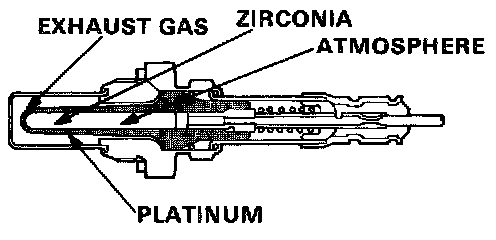
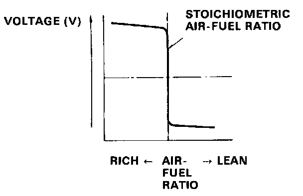

DTC 1


OXYGEN SENSOR
The oxygen sensor, detects the oxygen content in the exhaust gas, and inputs the ECU. In operation, the ECU receives the signals from the sensor and varies the duration during which fuel is injected. The oxygen sensor is installed on the exhaust manifold.
FLOW CHART